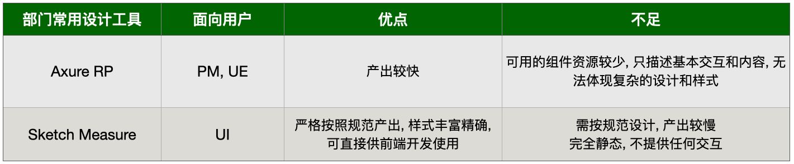
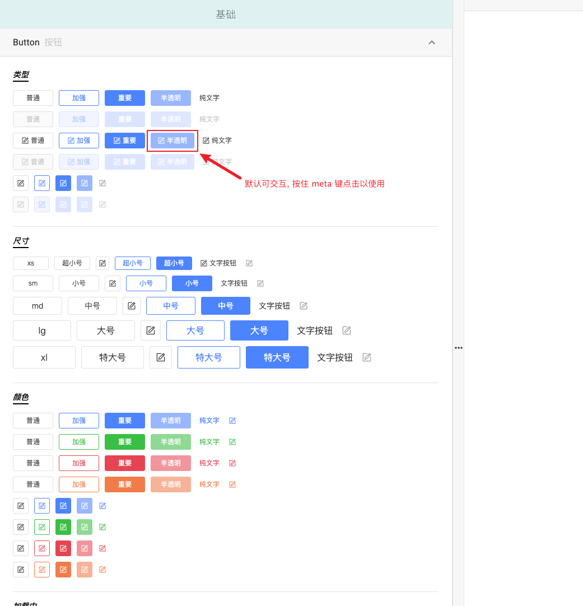
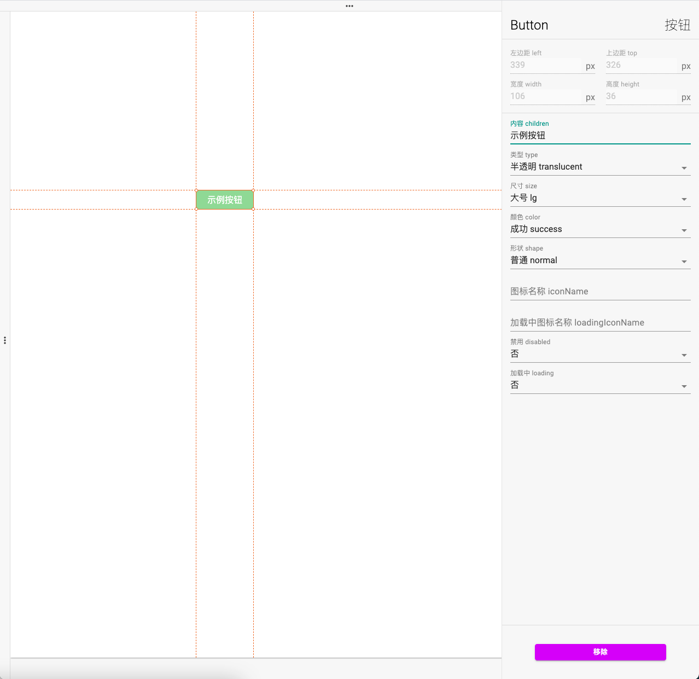
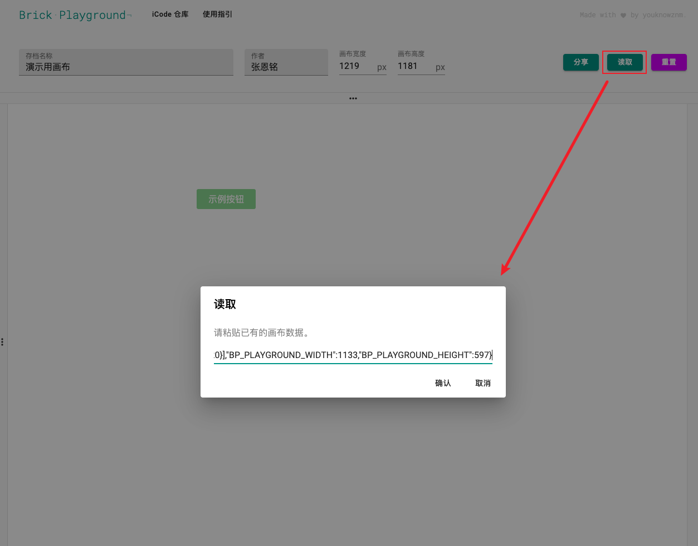
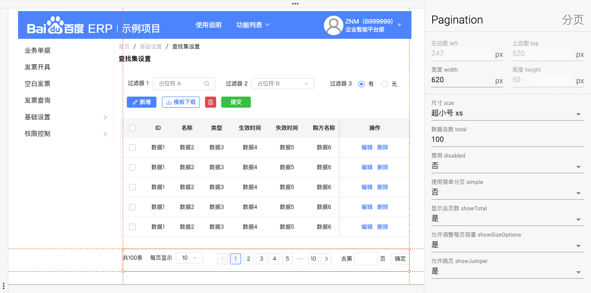
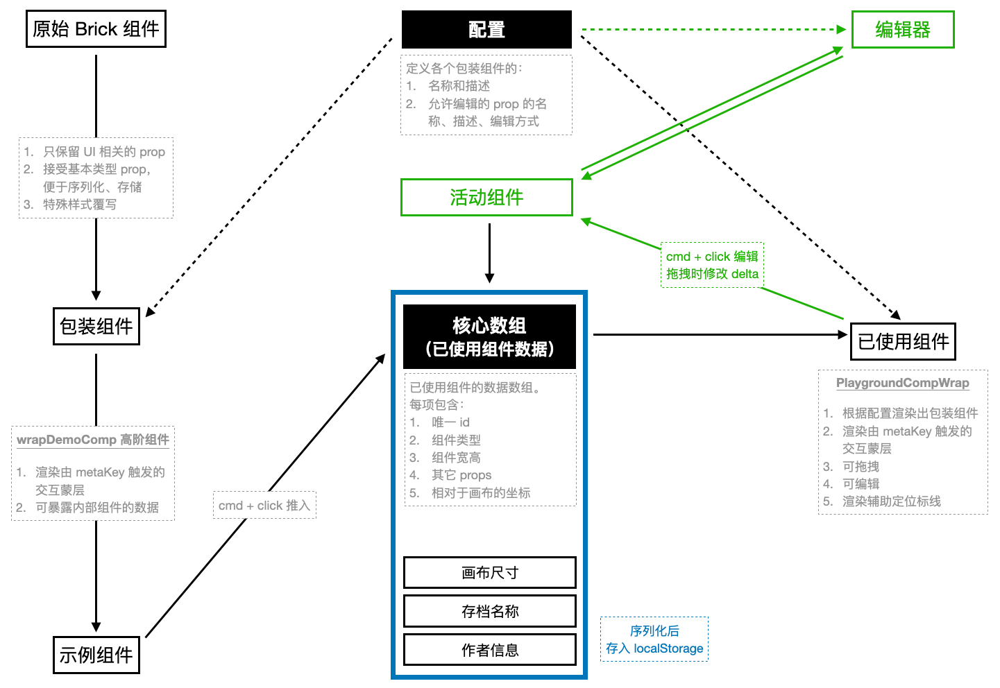

独立开发的原型产出工具 Brick UI Editor
简介
从个人使用体验出发, 总结了部门现有设计工具的一些优点和不足:

在完全规范的理想的流程中, 两者可以各司其职, 但实际情况未必如此.
为此, 个人设计和开发了 Brick UI Editor (brick 是团队新组件库的名字), 期望在一定程度上解决**项目数量多, 设计同学资源不足的痛点 **.
用法
左侧抽屉
- 根据分类, 展示了
brick组件的所有可能的实例, 并保留了交互效果 - 按住 meta 键(mac 的
command, windows 的ctrl), 实例上产生可交互的蒙层 - 点击以添加其到画布的默认位置
画布
- 添加的组件, 同样也是可交互的普通组件
- 按住 meta 键也会展示蒙层, 可进行拖拽和编辑
- 选中的组件展示它的宽高和坐标, 同时渲染辅助标线
- 右侧可以编辑所有 UI 相关的 prop
- 针对字符串, 布尔值, 枚举值等等类型, 提供不同的编辑方式
- 图标类 prop 通过特殊的图标选择器编辑
上方抽屉
- 可设置原型的名称, 作者, 画布宽高等信息
- 分享: 序列化当前画布的内容, 复制至剪贴板, 用于保存或分享
- 读取: 将已有的原型存档 json 数据, 写入当前画布
- 重置: 清空画布内容, 根据当前视口重置其宽高
示例
- hover 左侧抽屉, 查看和选取使用组件

- 出现在画布, 可编辑 UI 相关的 prop

- 分享或读取已有的画布

- 最终效果

假设完成了如图的交互稿,
可以复制出画布的存档数据, 分享给其它同学;
如果把画布清空, 重置, 可以通过粘贴剪贴板中的数据, 读取画布内容.
所有的编辑都会同步存储在本地, 随时刷新都可以恢复.
以上就是大致的流程闭环.
特点
1. 基于组件库
原型稿基于团队新组件库 brick, 符合公司 DLS 设计规范
2. 维持交互功能
在原型中维持组件的交互功能, 所见即所得
3. 携带数据
最重要的, 可携带 UI 渲染的来源数据, 直接供前端开发使用
核心实现
首先对组件库所有可用的原始组件分别处理, 产生相应的包装组件.
具体处理的逻辑依赖于一套配置, 它定义了各个包装组件的信息和允许编辑的 prop 的编辑方式等.
产生的包装组件有 3 个特点:
- 只保留 UI 及数据展示相关的 prop
- 接受基本类型 prop 以便序列化, 存储, 自身内部进行处理, 渲染出接受复杂 prop 的原始组件
- 一些样式和逻辑的覆写(例如
Popper,Modal这些相对整个视口定位的组件, 为了便于使用需要进行常规定位).
之后使用通用的高阶组件 wrapDemoComp, 产出左侧 demo 列表中的组件实例. 它把包装组件包裹在一个 <div> 容器中, 渲染与容器等宽高,
默认隐藏的交互蒙层, 按住 cmd metaKey 时展示蒙层;
点击后, 把内部包装组件的各项数据封装成一个对象, 推入已使用的组件数据数组. 它也是整个项目的核心数据.
每项包含: 组件的唯一 id, 类型, 宽高, 其它 props, 以及相对于画布的坐标.
根据配置, 把这个数组的每一项映射为包装组件的实例, 再经过处理, 作为已使用的组件渲染在画布上.
所做的处理包括:
- 包裹实际组件在一个可拖拽的容器内, 同样渲染按下 metaKey 才显示的交互蒙层, 点击蒙层会给予内部组件「活动」的状态
- 同时这个蒙层是拖拽行为的触发元素, 拖拽时改变元素的
transform transition.
存在活动的组件时, 可根据配置中的定义编辑它的坐标, 宽高以及其它 prop.
以上对组件的更新本质上就是对核心数组对应项的更新.
核心数组和画布宽高, 存档名称, 作者等数据发生变动时, 会被序列化并写入 localStorage, 页面刷新时自动恢复;
也可以手动读取序列化的结果, 也就是前面展示的读取功能.
数据流动图示
总体的数据流动如下图.
